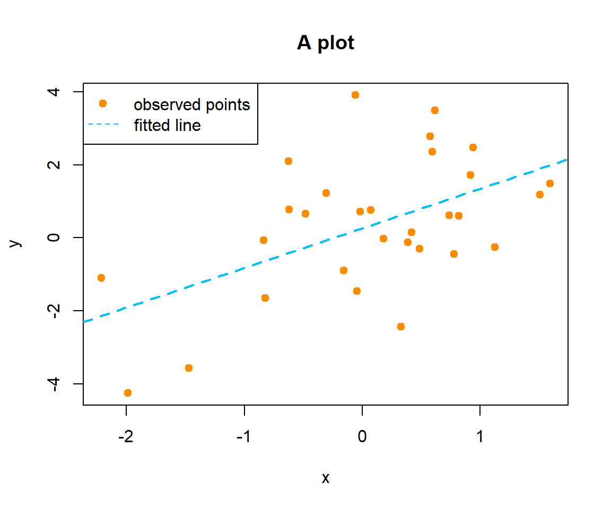

Chapter 1 R, RStudio and RMarkdown
Materials for learning R, RStudio, and RMarkdown can be found in another text from the same author, Applied Statistics with R.
The chapters up to and including Chapter 6 - R Resources contain an introduction to using R, RStudio, and RMarkdown. This chapter in particular contains a number of videos to get you up to speed on R, RStudio, and RMarkdown, which are also linked below. Also linked is an RMarkdown template which is referenced in the videos.
1.2 Template
1.3 Installing and Using R
R is a free-to-use software that is very popular in statistical computing. You can download R from . Another software that makes using R easier is Rstudio, which is available at . You can find many on-line guides that help you to set-up these two software, for example, this YouTube video. This guild is created using R Markdown, which is a feature provided by Rstudio.
We will start with some basic operations. Try type-in the following commands into your R console and start to explore yourself. Most of them are self-explanatory. Lines with a # in the front are comments, which will not be executed. Lines with ## in the front are outputs.
# Basic mathematics
1 + 3
## [1] 4
3*5
## [1] 15
3^5
## [1] 243
exp(2)
## [1] 7.389056
log(3)
## [1] 1.098612
log2(3)
## [1] 1.584963
factorial(5)
## [1] 120Most of our operations will be performed on data objects:
# vector
c(1,2,3,4)
## [1] 1 2 3 4
# matrix
matrix(c(1,2,3,4), 2, 2)
## [,1] [,2]
## [1,] 1 3
## [2,] 2 4
# create matrix from vectors
x = c(1,1,1,0,0,0); y = c(1,0,1,0,1,0)
cbind(x,y)
## x y
## [1,] 1 1
## [2,] 1 0
## [3,] 1 1
## [4,] 0 0
## [5,] 0 1
## [6,] 0 0
# matrix multiplication
matrix(c(1,2,3,4), 2, 2) %*% t(cbind(x,y))
## [,1] [,2] [,3] [,4] [,5] [,6]
## [1,] 4 1 4 0 3 0
## [2,] 6 2 6 0 4 0
# some simple operations
x[3]
## [1] 1
x[2:5]
## [1] 1 1 0 0
cbind(x,y)[1:2, ]
## x y
## [1,] 1 1
## [2,] 1 0
x + 1
## [1] 2 2 2 1 1 1
length(x)
## [1] 6
dim(cbind(x,y))
## [1] 6 2
# A warning will be issued when R detects something wrong. Results may still be produced.
x + c(1,2,3,4)
## Warning in x + c(1, 2, 3, 4): longer object length is not a multiple of
## shorter object length
## [1] 2 3 4 4 1 2Random number generation is important for statistical simulation.
# generate 10 Bernoulli random variables as a vector
rbinom(n=10, size = 1, prob = 0.5)
## [1] 0 1 1 0 1 1 1 0 1 0
# 2 random normally distributed variables
rnorm(n=4, mean = 1, sd = 2)
## [1] 4.1398190 1.9707688 4.5364697 -0.3865749If we need to replicate the results, we can set random seed
# after setting the seed, the two runs will generate exactly the same "random" numbers
set.seed(1)
rnorm(n=4, mean = 1, sd = 2)
## [1] -0.2529076 1.3672866 -0.6712572 4.1905616
set.seed(1)
rnorm(n=4, mean = 1, sd = 2)
## [1] -0.2529076 1.3672866 -0.6712572 4.1905616Statistical functions that provides a summary of the data
x = rnorm(n=100, mean = 1, sd = 2)
y = rnorm(n=100, mean = 2, sd = 1)
sum(x)
## [1] 118.4815
mean(x)
## [1] 1.184815
var(x)
## [1] 3.142351
median(x)
## [1] 1.148906
quantile(x, c(0.25, 0.5, 0.75))
## 25% 50% 75%
## 0.0115149 1.1489063 2.2746083
cor(x, y)
## [1] -0.04261199For discrete data, we usually use the table function
set.seed(1); n = 1000
x = rbinom(n, size = 1, prob = 0.75)
y = rbinom(n, size = 3, prob = c(0.4, 0.3, 0.2, 0.1))
table(x)
## x
## 0 1
## 248 752
table(x, y)
## y
## x 0 1 2 3
## 0 128 79 34 7
## 1 342 267 125 18For a mixture of discrete and continuous data (multiple variables), we often use a data.frame
# data.frame is a special data structure that can store both factor and numeric variables
z = runif(n, min = 18, max = 65)
data = data.frame("Gender" = as.factor(x), "Group" = as.factor(y), "Age" = z)
levels(data$Gender) = c("male", "female")
levels(data$Group) = c("patient", "physician", "engineer", "statistician")
# a peek at the top 3 entries of the data
head(data, 3)
## Gender Group Age
## 1 female physician 58.97484
## 2 female physician 63.45826
## 3 female patient 58.74506
# a brief summary
summary(data)
## Gender Group Age
## male :248 patient :470 Min. :18.03
## female:752 physician :346 1st Qu.:29.07
## engineer :159 Median :40.51
## statistician: 25 Mean :41.02
## 3rd Qu.:53.43
## Max. :64.99
# generate a 2 by 2 table that summarizes Gender and Group
table(data[, 1:2])
## Group
## Gender patient physician engineer statistician
## male 128 79 34 7
## female 342 267 125 18Fisher Exact Test and Chi-square test are tests of independence between two nominal variables.
# the test p-value is not significant
# recall that we generated the two variables independently.
fisher.test(table(data[, 1:2]))
##
## Fisher's Exact Test for Count Data
##
## data: table(data[, 1:2])
## p-value = 0.3361
## alternative hypothesis: two.sided
# chi-square test
chisq.test(table(data[, 1:2]))
##
## Pearson's Chi-squared test
##
## data: table(data[, 1:2])
## X-squared = 3.3437, df = 3, p-value = 0.3416For continuous variables, we can calculate and test Pearson’s correlation, Spearman’s rho or Kendall’ tau
set.seed(1); n = 30
x = rnorm(n)
y = x + rnorm(n, sd = 2)
z = x + rnorm(n, sd = 2)
# one can specify method = "kendall" or "spearman" to perform other correlations or tests
cor(y, z)
## [1] 0.5810874
cor.test(y, z)
##
## Pearson's product-moment correlation
##
## data: y and z
## t = 3.7782, df = 28, p-value = 0.0007592
## alternative hypothesis: true correlation is not equal to 0
## 95 percent confidence interval:
## 0.2792861 0.7784002
## sample estimates:
## cor
## 0.5810874A simple linear regression assumes the underlying model \(Y = \beta X + \epsilon\). With observed data, we can estimate the regression coefficients:
# the lm() function is the most commonly used
fit = lm(y~x)
summary(fit)
##
## Call:
## lm(formula = y ~ x)
##
## Residuals:
## Min 1Q Median 3Q Max
## -3.0404 -1.0099 -0.4594 1.1506 3.7069
##
## Coefficients:
## Estimate Std. Error t value Pr(>|t|)
## (Intercept) 0.2586 0.2964 0.873 0.39032
## x 1.0838 0.3249 3.336 0.00241 **
## ---
## Signif. codes: 0 '***' 0.001 '**' 0.01 '*' 0.05 '.' 0.1 ' ' 1
##
## Residual standard error: 1.617 on 28 degrees of freedom
## Multiple R-squared: 0.2844, Adjusted R-squared: 0.2588
## F-statistic: 11.13 on 1 and 28 DF, p-value: 0.00241A graphical view usually helps understand the data better. There are a variety of ways to customize your plot, such as color and shape.
plot(x, y, xlab = "x", ylab = "y", main = "A plot", col = "darkorange", pch = 19)
abline(a = fit$coefficients[1], b = fit$coefficients[2],
col = "deepskyblue", lty = 2, lwd = 2)
legend("topleft", c("observed points", "fitted line"), lty = c(NA, 2),
pch = c(19, NA), col = c("darkorange", "deepskyblue"))
R can read-in data from many different sources such as , , etc. For example, can be used to import files. The first argument should be specified as the path to the data file, or just the name of the file if the current working directory is the same as the data file. R objects, especially matrices, can be saved into these standard files. Use functions such as and to perform this. We can also save any object into file, which can be loaded later on. To do this try functions and .
One of the most important features of R is its massive collection of packages. A package is like an add-on that can be downloaded and installed and perform additional function and analysis.
# The MASS package can be used to generate multivariate normal distribution
library(MASS)
P = 4; N = 200
V <- 0.5^abs(outer(1:P, 1:P, "-"))
X = as.matrix(mvrnorm(N, mu=rep(0,P), Sigma=V))
head(X, 3)
## [,1] [,2] [,3] [,4]
## [1,] -0.5324135 1.022266 0.54818061 0.32146101
## [2,] 0.4287820 -1.612594 -1.79219165 -0.07651307
## [3,] -0.5563969 -1.335632 0.03372782 -1.62713529To get reference about a particular function, one can put a question mark in front of a function name to see details: